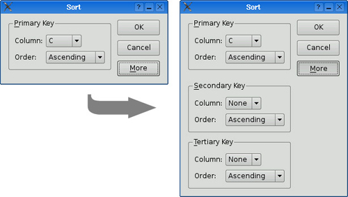
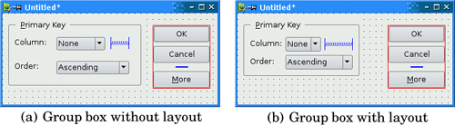
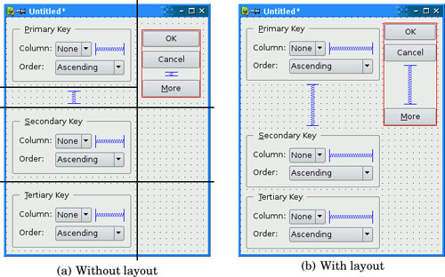
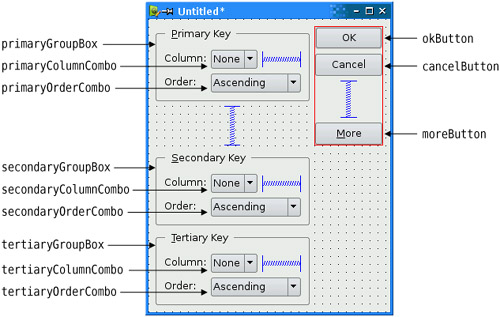
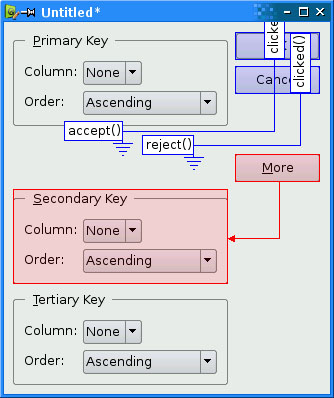
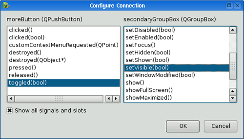

|
|
We have seen how to create dialogs that always show the same widgets whenever they are used. In some cases, it is desirable to provide dialogs that can change shape. The two most common kinds of shape-changing dialogs are extension dialogs and multi-page dialogs. Both types of dialog can be implemented in Qt, either purely in code or using Qt Designer.
Extension dialogs usually present a simple appearance but have a toggle button that allows the user to switch between the dialog's simple and extended appearances. Extension dialogs are commonly used for applications that are trying to cater to both casual and power users, hiding the advanced options unless the user explicitly asks to see them. In this section, we will use Qt Designer to create the extension dialog shown in Figure 2.11.

The dialog is a Sort dialog in a spreadsheet application, where the user can select one or several columns on which to sort. The dialog's simple appearance allows the user to enter a single sort key, and its extended appearance provides for two extra sort keys. A More button lets the user switch between the simple and extended appearances.
We will create the widget with its extended appearance in Qt Designer, and hide the secondary and tertiary keys at run-time as needed. The widget looks complicated, but it's fairly easy to do in Qt Designer. The trick is to do the primary key part first, then duplicate it twice to obtain the secondary and tertiary keys:
|
1.
|
Click File|New
Form and choose the "Dialog without Buttons" template.
|
|
2.
|
Create an OK button and drag it to the top right of
the form. Change its objectName to "okButton" and set its
default property to "true".
|
|
3.
|
Create a Cancel button, and drag it below the
OK button. Change its
objectName to "cancelButton".
|
|
4.
|
Create a vertical spacer and drag it below the
Cancel button, then create a
More button and drag it below
the vertical spacer. Change the More button's objectName to
"moreButton", set its text property to "&More", and
its checkable property to "true".
|
|
5.
|
Click the
OK button, then Shift+Click the Cancel button, the vertical spacer, and
the More button, then click
Form|Lay Out Vertically.
|
|
6.
|
Create a group box, two labels, two
comboboxes, and one horizontal spacer, and put them anywhere on the
form.
|
|
7.
|
Drag the bottom-right corner of the group box
to make it larger. Then move the other widgets into the group box
and position them approximately as shown in Figure 2.12 (a).
|
|
8.
|
Drag the right edge of the second combobox to
make it about twice as wide as the first combobox.
|
|
9.
|
Set the group box's title property to
"&Primary Key", the first label's text property to
"Column:", and the second label's text property to
"Order:".
|
|
10.
|
Right-click the first combobox and choose
Edit Items from the context
menu to pop up Qt Designer's
combobox editor. Create one item with the text "None".
|
|
11.
|
Right-click the second combobox and choose
Edit Items. Create an
"Ascending" item and a "Descending" item.
|
|
12.
|
Click the group box, then click Form|Lay Out in a Grid. Click the group
box again and click Form|Adjust
Size. This will produce the layout shown in Figure 2.12 (b).
|

If a layout doesn't turn out quite right or if you make a mistake, you can always click Edit|Undo or Form|Break Layout, then reposition the widgets and try again.
We will now add the Secondary Key and Tertiary Key group boxes:
|
1.
|
Make the dialog window tall enough for the
extra parts.
|
|
2.
|
Hold down the Ctrl key (Alt on the Mac) and click and drag the
Primary Key group box to
create a copy of the group box (and its contents) on top of the
original. Drag the copy below the original group box, while still
pressing Ctrl (or Alt). Repeat this process to create a
third group box, dragging it below the second group box.
|
|
3.
|
Change their title properties to
"&Secondary Key" and "&Tertiary Key".
|
|
4.
|
Create one vertical spacer and place it
between the primary key group box and the secondary key group
box.
|
|
5.
|
|
|
6.
|
Click the form to deselect any selected
widgets, then click Form|Lay Out in a
Grid. Now drag the form's bottom-right corner up and left to
make the form as small as it will go. The form should now match
Figure 2.13 (b).
|
|
7.
|
Set the two vertical spacer items'
sizeHint property to [20, 0].
|

The resulting grid layout has two columns and four rows, giving a total of eight cells. The Primary Key group box, the leftmost vertical spacer item, the Secondary Key group box, and the Tertiary Key group box each occupy a single cell. The vertical layout that contains the OK, Cancel, and More buttons occupies two cells.
That leaves two empty cells in the bottom right of the dialog. If this isn't what you have, undo the layout, reposition the widgets, and try again.
Rename the form "SortDialog" and change the window title to "Sort". Set the names of the child widgets to those shown in Figure 2.14.

Click Edit|Edit Tab Order. Click each combobox in turn from topmost to bottommost, then click the OK, Cancel, and More buttons on the right side. Click Edit|Edit Widgets to leave tab order mode.
Now that the form has been designed, we are ready to make it functional by setting up some signal–slot connections. Qt Designer allows us to establish connections between widgets that are part of the same form. We need to establish two connections.
Click Edit|Edit Signals/Slots to enter Qt Designer's connection mode. Connections are represented by blue arrows between the form's widgets, as shown in Figure 2.15, and they are also listed in Qt Designer's signal/slot editor window. To establish a connection between two widgets, click the sender widget and drag the red arrow line to the receiver widget, then release. This pops up a dialog that allows you to choose the signal and the slot to connect.

The first connection to be made is between the okButton and the form's accept() slot. Drag the red arrow line from the okButton to an empty part of the form, then release to pop up the Configure Connection dialog shown in Figure 2.16. Choose clicked() as the signal and accept() as the slot, then click OK.

For the second connection, drag the red arrow line from the cancelButton to an empty part of the form, and in the Configure Connection dialog connect the button's clicked() signal to the form's reject() slot.
The third connection to establish is between the moreButton and the secondaryGroupBox. Drag the red arrow line between these two widgets, then choose toggled(bool) as the signal and setVisible(bool) as the slot. By default, Qt De- signer doesn't list setVisible(bool) in the list of slots, but it will appear if you enable the Show all signals and slots option.
The fourth and last connection is between the moreButton's toggled(bool) signal and the tertiaryGroupBox's setVisible(bool) slot. Once the connections have been made, click Edit|Edit Widgets to leave connection mode.
Save the dialog as sortdialog.ui in a directory called sort. To add code to the form, we will use the same multiple inheritance approach that we used for the Go to Cell dialog in the previous section.
First, create a sortdialog.h file with the following contents:
#ifndef SORTDIALOG_H
#define SORTDIALOG_H
#include <QDialog>
#include "ui_sortdialog.h"
class SortDialog : public QDialog, public Ui::SortDialog
{
Q_OBJECT
public:
SortDialog(QWidget *parent = 0);
void setColumnRange(QChar first, QChar last);
};
#endif
Now create sortdialog.cpp:
1 #include <QtGui> 2 #include "sortdialog.h" 3 SortDialog::SortDialog(QWidget *parent) 4 : QDialog(parent) 5 { 6 setupUi(this); 7 secondaryGroupBox->hide(); 8 tertiaryGroupBox->hide(); 9 layout()->setSizeConstraint(QLayout::SetFixedSize); 10 setColumnRange('A', 'Z'); 11 } 12 void SortDialog::setColumnRange(QChar first, QChar last) 13 { 14 primaryColumnCombo->clear(); 15 secondaryColumnCombo->clear(); 16 tertiaryColumnCombo->clear(); 17 secondaryColumnCombo->addItem(tr("None")); 18 tertiaryColumnCombo->addItem(tr("None")); 19 primaryColumnCombo->setMinimumSize( 20 secondaryColumnCombo->sizeHint()); 21 QChar ch = first; 22 while (ch <= last) { 23 primaryColumnCombo->addItem(QString(ch)); 24 secondaryColumnCombo->addItem(QString(ch)); 25 tertiaryColumnCombo->addItem(QString(ch)); 26 ch = ch.unicode() + 1; 27 } 28 }
The constructor hides the secondary and tertiary parts of the dialog. It also sets the sizeConstraint property of the form's layout to QLayout::SetFixedSize, making the dialog non-resizable by the user. The layout then takes over the responsibility for resizing, and resizes the dialog automatically when child widgets are shown or hidden, ensuring that the dialog is always displayed at its optimal size.
The setColumnRange() slot initializes the contents of the comboboxes based on the selected columns in the spreadsheet. We insert a "None" item in the comboboxes for the (optional) secondary and tertiary keys.
Lines 19 and 20 present a subtle layout idiom. The QWidget::sizeHint() function returns a widget's "ideal" size, which the layout system tries to honor. This explains why different kinds of widgets, or similar widgets with different contents, may be assigned different sizes by the layout system. For comboboxes, this means that the secondary and tertiary comboboxes, which contain "None", end up larger than the primary combobox, which contains only single-letter entries. To avoid this inconsistency, we set the primary combobox's minimum size to the secondary combobox's ideal size.
Here is a main() test function that sets the range to include columns 'C' to 'F' and then shows the dialog:
#include <QApplication>
#include "sortdialog.h"
int main(int argc, char *argv[])
{
QApplication app(argc, argv);
SortDialog *dialog = new SortDialog;
dialog->setColumnRange('C', 'F');
dialog->show();
return app.exec();
}
That completes the extension dialog. As the example illustrates, an extension dialog isn't much more difficult to design than a plain dialog: All we needed was a toggle button, a few extra signal–slot connections, and a non-resizable layout. In production applications, it is quite common for the button that controls the extension to show the text Advanced >>> when only the basic dialog is visible and Advanced <<< when the extension is shown. This is easy to achieve in Qt by calling setText() on the QPushButton whenever it is clicked.
The other common type of shape-changing dialogs, multi-page dialogs, are even easier to create in Qt, either in code or using Qt Designer. Such dialogs can be built in many different ways.
A QTabWidget can be used in its own right. It provides a tab bar that controls a built-in QStackedWidget.
A QListWidget and a QStackedWidget can be used together, with the QListWidget's current item determining which page the QStackedWidget shows, by connecting the QListWidget::currentRowChanged() signal to the QStackedWidget::setCurrentIndex() slot.
A QTreeWidget can be used with a QStackedWidget in a similar way to a QListWidget.
We cover the QStackedWidget class in Chapter 6.
|
|
| Converted from CHM to HTML with chm2web Pro 2.85 (unicode) |